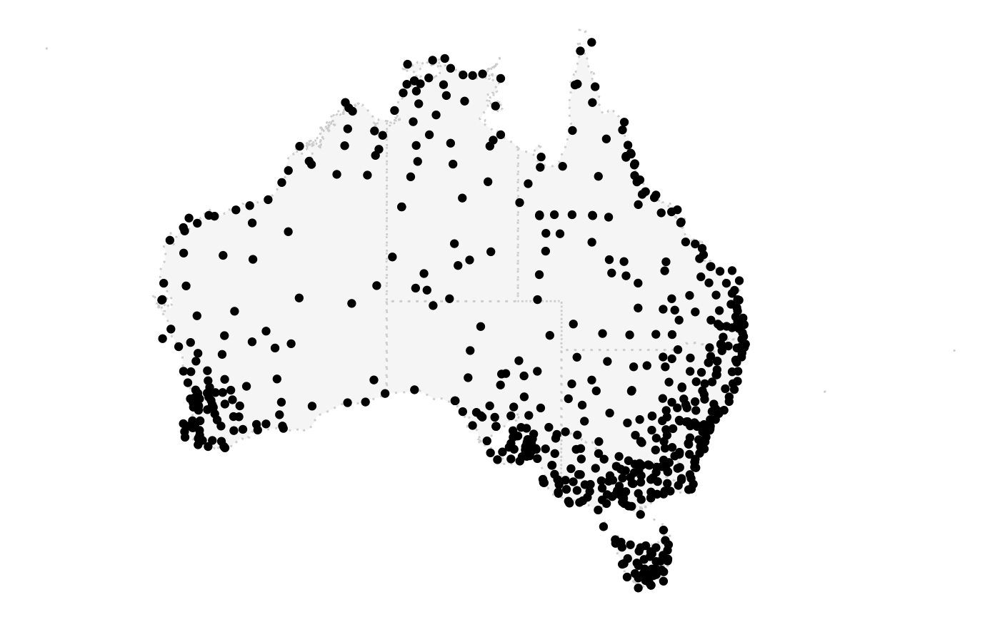
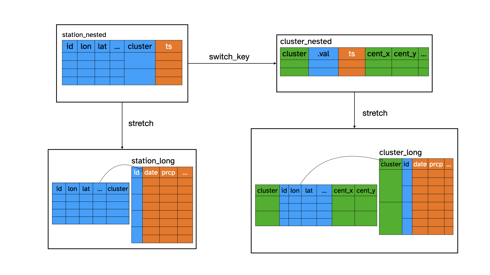
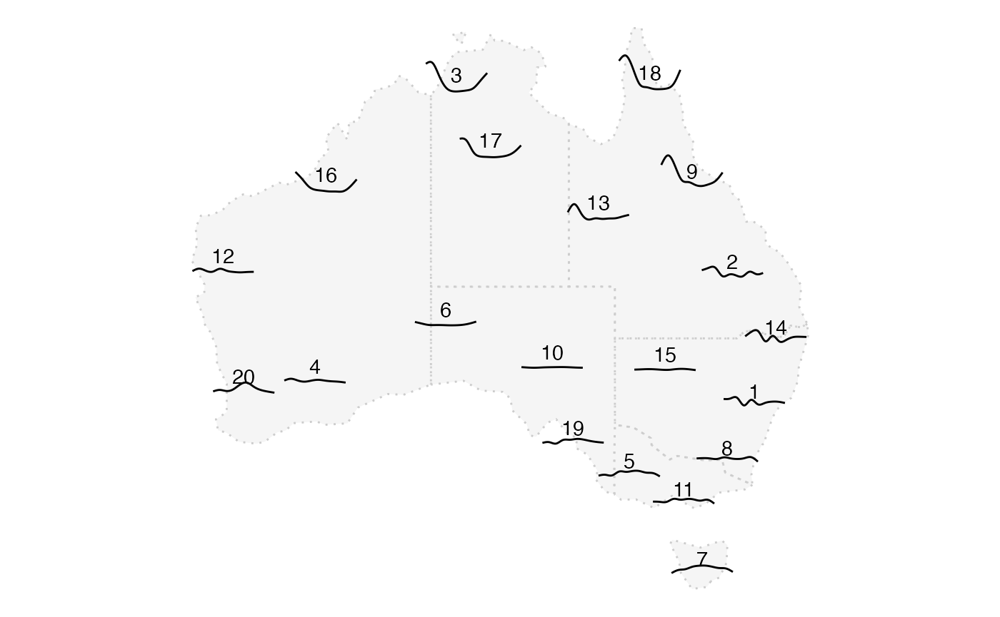
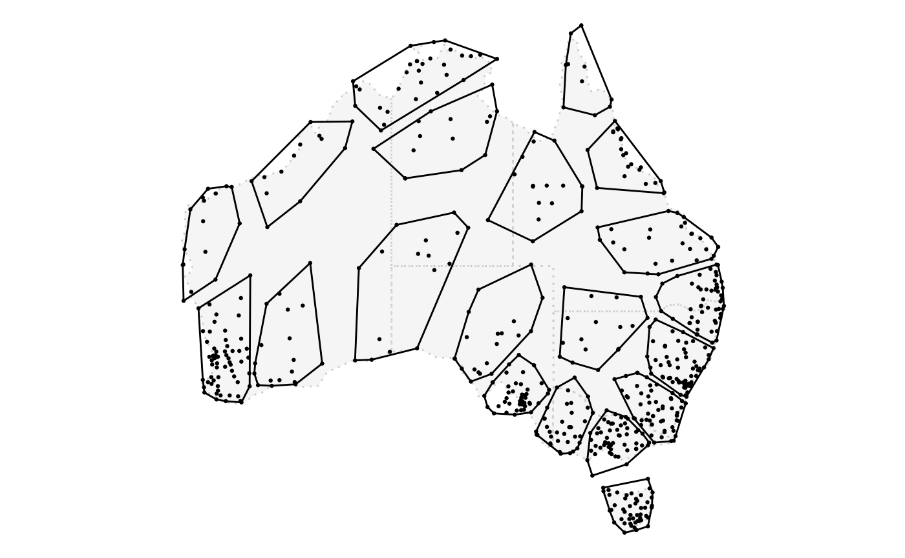

Global Historical Climatology Network (GHCN) provides daily climate measures from stations across the world. prcp_aus extracts daily precipitation and minimum temperature from GHCN for 639 stations in Australia from 2016 to 2020. This is where these stations locate in an Australia map:
state_map <- rmapshaper::ms_simplify(ozmaps::abs_ste, keep = 2e-3)
ggplot() +
geom_sf(data = state_map, inherit.aes = FALSE,
color = "grey80", alpha = 0.4, linetype = 3) +
geom_point(data = prcp_aus , aes(x = long, y = lat)) +
theme_void()
This is a lot of stations to look at for one climate variable and they can’t all fit into a glyph map. What we can do is to group stations into clusters and look at the aggregated series in the glyph map. In this vignette, I will introduce how to perform aggregation using a hierarchical data structure in cubble.
First, let’s summarise the daily data into weekly sum for each station:
(station_long <- prcp_aus %>%
face_temporal(ts) %>%
mutate(wk = lubridate::week(date)) %>%
group_by(wk) %>%
summarise(prcp = sum(prcp, na.rm = TRUE)))
#> # cubble: wk, id [639]: long form
#> # bbox: [113.53, -43.66, 153.64, -10.05]
#> # spatial: lat [dbl], long [dbl], elev [dbl], name [chr], wmo_id [dbl]
#> id wk prcp
#> <chr> <dbl> <dbl>
#> 1 ASN00001006 1 3660
#> 2 ASN00001006 2 1766
#> 3 ASN00001006 3 1748
#> 4 ASN00001006 4 4614
#> 5 ASN00001006 5 1080
#> 6 ASN00001006 6 1868
#> 7 ASN00001006 7 2494
#> 8 ASN00001006 8 1696
#> 9 ASN00001006 9 3124
#> 10 ASN00001006 10 1834
#> # … with 33,814 more rowsFirst we need to assign each station a cluster number. Here we use a simple kmean algorithm based on the distance matrix to create 20 clusters. This creates station_nested as a station level nested cubble with a cluster column indicating the group each station belongs to.
station_nested
#> # cubble: id [639]: nested form
#> # bbox: [113.53, -43.66, 153.64, -10.05]
#> # temporal: wk [dbl], prcp [dbl]
#> id lat long elev name wmo_id ts cluster
#> <chr> <dbl> <dbl> <dbl> <chr> <dbl> <list> <int>
#> 1 ASN00001006 -15.5 128. 3.8 wyndham aero 95214 <tibble> 3
#> 2 ASN00001007 -13.8 126. 6 troughton island 94102 <tibble> 3
#> 3 ASN00001018 -16.4 126. 546 mount elizabeth 94211 <tibble> 16
#> 4 ASN00001019 -14.3 127. 23 kalumburu 94100 <tibble> 3
#> 5 ASN00001020 -14.1 126. 51 truscott 95101 <tibble> 3
#> 6 ASN00001025 -15.4 126. 385 doongan 94215 <tibble> 3
#> 7 ASN00002012 -18.2 128. 422 halls creek airport 94212 <tibble> 17
#> 8 ASN00002032 -17.0 128. 203 warmun 94213 <tibble> 3
#> 9 ASN00002056 -15.8 129. 44 kununurra aero 94216 <tibble> 3
#> 10 ASN00002064 -16.6 128. 164 argyle aerodrome 94217 <tibble> 3
#> # … with 629 more rowsTo create a group level cubble, use switch_key() with the new key variable, cluster:
cluster_nested <- station_nested %>% switch_key(cluster)
cluster_nested %>% head(5)
#> # cubble: cluster [5]: nested form
#> # bbox: [118.84, -38.44, 153.21, -11.04]
#> # temporal: id [chr], wk [dbl], prcp [dbl]
#> cluster .val ts
#> <int> <list> <list>
#> 1 1 <tibble [62 × 6]> <tibble [3,286 × 3]>
#> 2 2 <tibble [28 × 6]> <tibble [1,484 × 3]>
#> 3 3 <tibble [30 × 6]> <tibble [1,590 × 3]>
#> 4 4 <tibble [18 × 6]> <tibble [954 × 3]>
#> 5 5 <tibble [36 × 6]> <tibble [1,908 × 3]>The resulted cluster_nested now has cluster as the key and all the station level time invariant variables are nested inside .val. Currently, there is no cluster level time invariant variables and we can add the centroid of each cluster by get_centroid():
(cluster_nested <- cluster_nested %>% get_centroid())
#> # cubble: cluster [20]: nested form
#> # bbox: [113.53, -43.66, 153.64, -10.05]
#> # temporal: id [chr], wk [dbl], prcp [dbl]
#> cluster .val ts hull cent_long cent_lat
#> <int> <list> <list> <list> <dbl> <dbl>
#> 1 1 <tibble [62 × 6]> <tibble [3,286 × 3]> <tibble> 150. -32.1
#> 2 2 <tibble [28 × 6]> <tibble [1,484 × 3]> <tibble> 149. -24.5
#> 3 3 <tibble [30 × 6]> <tibble [1,590 × 3]> <tibble> 131. -13.7
#> 4 4 <tibble [18 × 6]> <tibble [954 × 3]> <tibble> 121. -30.6
#> 5 5 <tibble [36 × 6]> <tibble [1,908 × 3]> <tibble> 142. -36.1
#> 6 6 <tibble [16 × 6]> <tibble [848 × 3]> <tibble> 130. -27.3
#> 7 7 <tibble [49 × 6]> <tibble [2,571 × 3]> <tibble> 147. -41.8
#> 8 8 <tibble [55 × 6]> <tibble [2,915 × 3]> <tibble> 148. -35.3
#> 9 9 <tibble [22 × 6]> <tibble [1,166 × 3]> <tibble> 146. -19.3
#> 10 10 <tibble [20 × 6]> <tibble [1,060 × 3]> <tibble> 137. -29.8
#> 11 11 <tibble [53 × 6]> <tibble [2,809 × 3]> <tibble> 145. -37.8
#> 12 12 <tibble [16 × 6]> <tibble [848 × 3]> <tibble> 115. -24.2
#> 13 13 <tibble [17 × 6]> <tibble [901 × 3]> <tibble> 140. -21.1
#> 14 14 <tibble [54 × 6]> <tibble [2,845 × 3]> <tibble> 151. -28.4
#> 15 15 <tibble [17 × 6]> <tibble [901 × 3]> <tibble> 144. -29.9
#> 16 16 <tibble [13 × 6]> <tibble [689 × 3]> <tibble> 122. -19.5
#> 17 17 <tibble [15 × 6]> <tibble [795 × 3]> <tibble> 133. -17.5
#> 18 18 <tibble [10 × 6]> <tibble [530 × 3]> <tibble> 143. -13.6
#> 19 19 <tibble [47 × 6]> <tibble [2,491 × 3]> <tibble> 138. -34.2
#> 20 20 <tibble [61 × 6]> <tibble [3,233 × 3]> <tibble> 117. -31.2You can also use face_temporal() to get the cluster level long cubble:
(cluster_long <- cluster_nested %>% face_temporal(ts))
#> # cubble: wk, cluster [20]: long form
#> # bbox: [113.53, -43.66, 153.64, -10.05]
#> # spatial: id [chr], lat [dbl], long [dbl], elev [dbl], name [chr], wmo_id
#> # [dbl], hull [list], cent_long [dbl], cent_lat [dbl]
#> cluster id wk prcp
#> <int> <chr> <dbl> <dbl>
#> 1 1 ASN00048031 1 978
#> 2 1 ASN00048031 2 214
#> 3 1 ASN00048031 3 642
#> 4 1 ASN00048031 4 594
#> 5 1 ASN00048031 5 204
#> 6 1 ASN00048031 6 1640
#> 7 1 ASN00048031 7 154
#> 8 1 ASN00048031 8 329
#> 9 1 ASN00048031 9 232
#> 10 1 ASN00048031 10 684
#> # … with 33,814 more rowsNow we should have access to both station and cluster level in the nested and long form. Let’s summarise them within a diagram:

With these data, we can make a glyph map to understand the precipitation pattern in Australia:

Or to inspect the station membership of each cluster:
ggplot() +
geom_sf(data = state_map, inherit.aes = FALSE,
color = "grey80", alpha = 0.4, linetype = 3) +
geom_point(data = station_nested, aes(x = long, y = lat), size = 0.5) +
ggforce::geom_mark_hull(
data = cluster_nested %>% tidyr::unnest(hull),
expand = 0, radius = 0,
aes(x = long, y = lat, group = cluster)) +
theme_void()